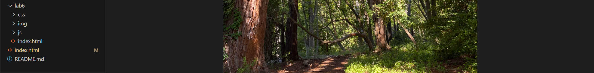

Lab 3 - File Structure and File Transfer
Challenge
The lab wants us to make sure we can properly structure our VSCode files and figure out how to get files to work with each other. We created index.html files and used them to create a website that links to other files.
Problems
Initially it was just a little tricky to actually figure out what the lab wanted, with a minor hiccup in getting the files to link properly in the website, but it is fine now. I also had a few struggles resizing images, but I managed to do it.
Reflection
I am learning a great deal, for example how to do several neat tricks in HTML, such as linking the labs. I don't know if I put excellent effort in, but I feel as though I have done a lot of things not mandatory to simply make it all easier on the eyes.
Results
I've managed to create this site, link it to my main Art101 site for myself, and customize it all a little.
My file Structure, which needed to be split into two screenshots.
The HTML behind the scenes of my main Art101 website.
What the HTML becomes when loaded up in my browser.
The HTML of the Lab 3 site.
The resulting Lab 3 site.